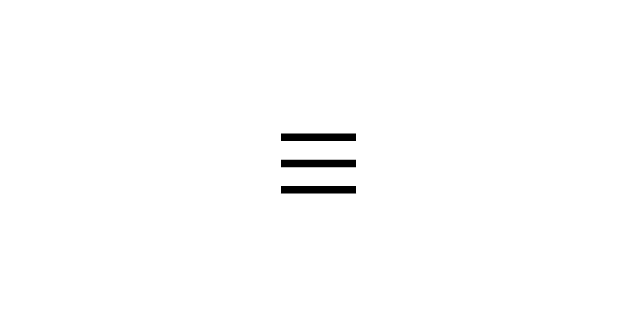

Comme je suis un petit malin, j'ai profité du fait de créer mon propre
site statique pour réaliser mon expérimentation. J'ai donc utilisé le
CSS pour mettre en page mon site web.
Pour le menu hamburger, j'ai utilisé le CodePen de Mikael Ainalem et
je l'ai modifié à ma guise. J'ai adopté une technique un peu barbare
consistant à utiliser du JavaScript pour que quand un utilisateur
clique sur le menu, un div passe de "display : none" à "display :
block" pour afficher les liens cliquables. (À voir sur le menu
hamburger en-haut à gauche de la page)
En savoir plus...
A l'aide du blog "CoderChamp", j'ai revu les propriétés des div, h1,
p, img, arrière plan, border, etc. et j'ai pu réaliser la mise en page
de ce simple site statique. J'ai décidé de rester sur quelque chose de
sobre avec des couleurs qui changent de l'ordinaire bleu et blanc.
LE GUIDE ULTIME DU CSS 2023